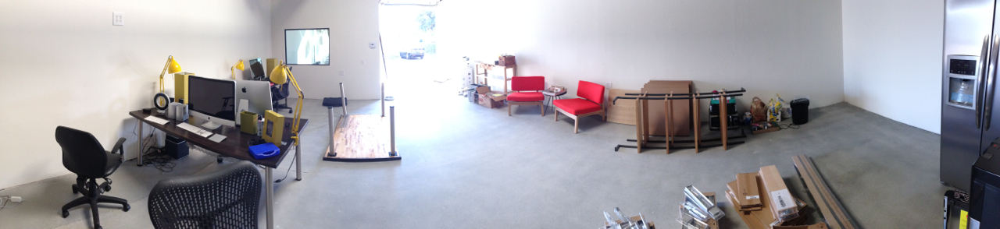

I’m excited to be in our new space for Style Hatch. We have a lot of work ahead of us with our new Turnstone desks being delivered today, a kitchen to install, and a mountain of wood for our design and build out.
We have some fresh new themes for Tumblr in the works—unlike anything else we’ve launched. Beyond themes we are evolving Style Hatch to give people the tools, resources and designs to express their creativity and genius online.
It feels good to have a fresh start, full of vision and excitement for what’s ahead.